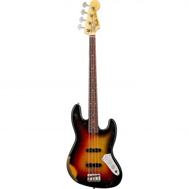

Mezelf voorstellen - Kelvin
De enige echte Kelvin Westerink
Dit ben ik
Mijn naam is Kelvin , ik ben 16 jaar en ik woon in het dode dorpje genaamd Kommerzijl.
Ons gezin bestaat uit: Mijn ouders, mijn zusje, 3 katten, 1 poes en 1 hond.
Dit is wat ik doe in m'n vrije tijd:
Basgitaar Spelen
Netflix Kijken
Muziek maken
Muziek Luisteren
Met Vrienden Afspreken
Over Basgitaar
Ik speel sinds na de zomervakantie basgitaar.
Ik volg de lessen in Zuidhorn en de lessen gaan heel erg goed.
Mijn basgitaar heeft 4 snaren. Het is een prima beginners basgitaar
Ik kan zelf al 2 loopjes, ze zijn allebei best pittig maar heb ze onder de knie.

KeWe
In mijn vrije tijd maak ik altijd muziek.
Ik maak muziek binnen de volgende genre's:
Hardcore
Hardstyle
Russian Hardbass
Hier zijn een aantal links van nummers die ik heb gemaakt:
KeWe - Power
KeWe - Fresh